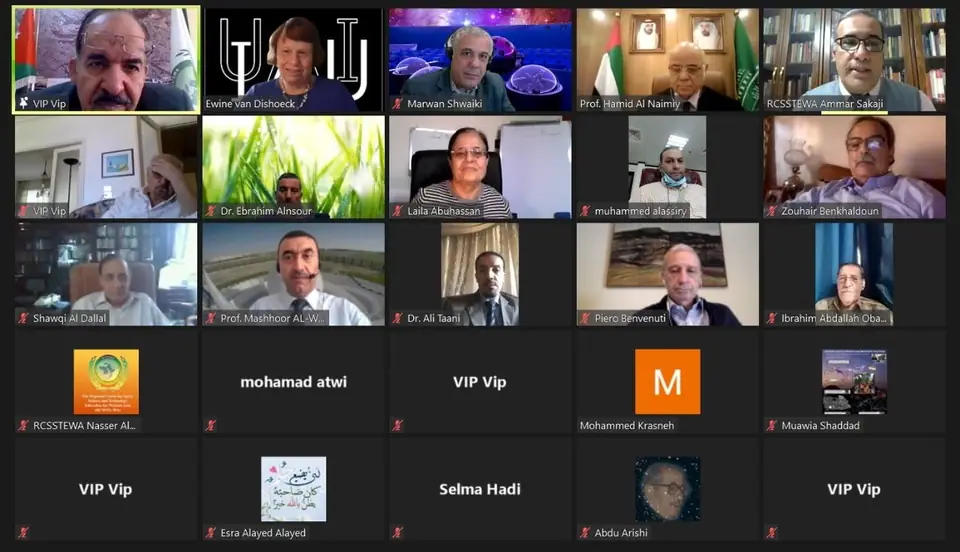

مؤتمرات وندوات وملتقيات أخرى
اجتماع الشرق الأوسط وأفريقيا الإقليمي للاتحاد الفلكي الدولي (MEARIM)
الاتحاد العربي لعلوم الفضاء والفلك وبالتعاون مع الاتحاد الفلكي الدولي يستضيف
الاجتماع الخامس لدول الشرق الأوسط وأفريقيا (MEARIM )
من خلال المنصة الافتراضية للاتحاد العربي لعلوم الفضاء والفلك.

عمان – الأردن – (10 – 12 تشرين الثاني 2020)
تحت رعاية البروفيسور “حميد مجول النعيمي” رئيس الاتحاد العربي لعلوم الفضاء والفلك، ومدير جامعة الشارقة وبحضور رئيس الاتحاد الفلكي الدولي “إدوين فان ديشيوك “ومدير مكتب الفلك من أجل التنمية التابع للاتحاد الفلكي الدولي” كيفن جوفندر” وعدد من مدراء ورؤساء الجمعيات والهيئات الفلكية العربية والعالمية عقد الاتحاد الفلكي الدولي اجتماعه الخامس لدول الشرق الأوسط وأفريقيا تحت عنوان (حول تدريس وأبحاث الفلك للأجيال القادمة )، والذي شهد مشاركة عدد كبير من العلماء والباحثين والمختصين في علوم الفضاء والفلك من أكثر من سبع وثلاثين دولة حول العالم، وقد افتتح الدكتور المهندس عوني محمد الخصاونة، مدير عام المركز الإقليمي لتدريس علوم وتكنولوجيا الفضاء لغرب آسيا، الأمين العام للاتحاد العربي لعلوم الفضاء والفلك، وقائع فعاليات المؤتمر بكلمته الترحيبية حيث جرى عقد المؤتمر والاجتماع من خلال المنصة الإفتراضيةللاتحاد العربي لعلوم الفضاء والفلك.
وكانت رئيسة الاتحاد الفلكي الدولي “إدوين فان ديشيوك” قد ألقت كلمة في افتتاح المؤتمر عبرت فيها عن شكرها لراعي الحفل رئيس الاتحاد العربي لعلوم الفضاء والفلك الأستاذ الدكتور حميد مجول النعيمي كما أشادت بالجهات المنظمة للمؤتمر ورئيس اللجنة التنظيمية الدكتور المهندس عوني محمد الخصاونة الأمين العام للاتحاد العربي لعلوم الفضاء والفلك وبينت أهمية عقد هذا المؤتمر في ظل هذه الظروف العصيبة التي يمر بها المجتمع الدولي نتيجة جائحة كوفيد، وأضافت أن عقد هذا الاجتماع يشكل نقطة مضيئة في التعاون الدولي بين أفريقيا والشرق الأوسط والاتحاد الفلكي الدولي، وأشادت بالحضور الكبير والمتنوع للمؤتمر ومن مختلف دول العالم الذي شارك فيه عدد كبير من العلماء على مستوى العالم ومن اتحاد الفلك الدولي ومن مؤسسات الفلك والفضاء في الشرق الأوسط وأفريقيا.
وفي كلمته، أوضح راعي المؤتمر، رئيس الاتحاد العربي لعلوم الفضاء والفلك، البروفيسور حميد مجول النعيمي أهمية عقد هذا الاجتماع وهذا المؤتمر في هذه الظروف الدولية المعقدة، وفي ظروف جائحة كورونا، وبعد أن رحب بالضيوف الكرام ورحب بجميع المشاركين، أشاد بالأوراق العلمية المقدمة للمؤتمر والتي تظهر في أجندته، وأشاد بالجهود المميزة التي بذلها الدكتور المهندس عوني محمد الخصاونة / الأمين العام للاتحاد / مدير عام المركز الإقليمي لتدريس علوم وتكنولوجيا الفضاء وبالتنظيم والإعداد المميز للمؤتمر، ودعا إلى استمرار التعاون بين الدول العربية والدول الإفريقية من خلال المنظمات الفلكية الدولية مثل الاتحاد الفلكي الدولي والمنظمات الفلكية الإقليمية مثل الاتحاد العربي لعلوم الفضاء والفلك ومكتب الفلك من أجل التنمية في الدول العربية.
وقد أعرب مدير مكتب الفلك من أجل التنمية التابع للاتحاد الفلكي الدولي السيد” كيفن جوفندر” عن شكره للأمين العام للاتحاد العربي ومدير المركز الإقليمي الدكتور المهندس عوني الخصاونة على الجهود الكبيرة والمميزة التي بذلها لعقد هذا الاجتماع بعد أن جرى تأجيله لعدد من المرات بسبب ظروف الجائحة، وقال إن اجتماع هذا العدد الكبير من العلماء والباحثين في شؤون الفضاء والفلك من مختلف دول العالم وهذا العدد الكبير المميز من الأوراق العلمية المقدمة للمؤتمر يشير إلى الاهتمام الكبير في تطوير علوم الفلك واستخدامها في التنمية المستدامة ولصالح البشرية جمعاء.
وقد بحث المشاركون الأوراق العلمية المقدمة للمؤتمر، حيث نوقشت أكثر من ” ستين” ورقة علمية من خلال جلسات صباحية ومسائية على مدار ثلاثة أيام من انعقاد المؤتمر، وأدار جلسات المؤتمر عدد من الأكاديميين المرموقين من مختلف دول العالم، فهذا المؤتمر يهدف إلى الارتقاء بالمستوى العلمي والمهني للعاملين في قطاع الفضاء والفلك حيث اشتملت محاور المؤتمر على العديد من الموضوعات المتخصصة مثل التلسكوبات البصرية والراديوية، والبنية النجمية والمجرات، علم الكونيات وأحدث عمليات الرصد، واستخدام نظم القباب السماوية في التعليم، والنظام الشمسي، والأجسام القريبة من الأرض، والكواكب الخارجية، وعلم الفلك وطقس الفضاء وتغير المناخ، وأدوات التتبع متعددة الأغراض في الفيزياء الفلكية: الموجات الكهرومغناطيسية، والأشعة الكونية، والنيوترونات، وموجات الجاذبية وكذلك عرض أفضل الممارسات في توعية الجمهور باستخدام وسائل التواصل الاجتماعي للمشاركة العامة في علم الفلك، الاتصالات الفلكية لتعزيز السلام والتواصل بين الثقافات، مطيافية فورييه لتحويل الأشعة تحت الحمراء (FTIR) وتطبيقاتها في علوم الفضاء، ودور علم الفلك في عصر جائحة كورونا (Covid-19).
ويذكر أن اجتماع اتحاد الفلك الدولي الخامس للشرق الأوسط وأفريقيا يعقد بالتناوب مرة كل عامين بحيث يكون في إحدى الدول الأفريقية وبعدها بسنتين في واحدة من الدول العربية، ويأتي هذا الاجتماع الخامس ليكون لبنة في التعاون بين الدول العربية والإtريقية، وللمساهمة في نشر المعرفة في علوم الفلك والفضاء بين مختلف طبقات المجتمع في هذه الدول، حيث يأتي افتتاح المكتب الإقليمي العربي لتنمية الفلك للمنطقة العربية الذي يحتضنه الاتحاد العربي في عمان عام 2015م لتحقيق وتحسين التعاون في مجال علوم وتكنولوجيا الفضاء والاستفادة من العلوم الإنسانية بشكل فعال في التنمية المستدامة للموارد الطبيعية من خلال التعليم والتدريب والبحث. كما ويقوم مكتب تنمية الفلك في الدول العربية بإعداد وتدريب الكوادر العربية المتخصصة في مجال الفضاء وعلم الفلك. ويعتبر مركزاً للتدريب والبحث العلمي للمنطقة العربية. وقد حقق العديد من الإنجازات خلال هذه الفترة القصيرة، من خلال التعاون الفعال مع الدول الأعضاء، بما في ذلك العديد من الاتفاقيات مع مختلف الدول والمؤسسات المماثلة.
ومن الجدير بالذكر أن الاتحاد العربي لعلوم الفضاء والفلك يجمع في عضويته جميع الجمعيات والهيئات العربية المعنية بشؤون الفلك، ويسعى منذ تأسيسه لتأطير العمل العربي المشترك من خلال عقد المؤتمرات العلمية والندوات وورش العمل التي تجمع المختصين العرب وتساهم في نشر المعرفة الفلكية وتبادل المعلومات والأفكار، وكذلك تأطير البحث في كل ما يتعلق بعلوم الفضاء والفلك في الدول العربية ودعم المؤسسات والجمعيات العلمية في الوطن العربي والإسهام في مساعدة الفلكيين الهواة والمختصين بعلوم الفلك والفضاء العرب على تشكيل مؤسساتهم وجمعياتهم العلمية في البلدان العربية.
ومن جانبه قال الدكتور المهندس عوني محمد الخصاونة الأمين العام للاتحاد ومدير عام المركز الإقليمي لتدريس علوم وتكنولوجيا الفضاء لغرب آسيا، إن المركز الإقليمي وُجد لخدمة الدول العربية، وقد تأسس عام 2012، وتم افتتاح مقره الدائم في عمّان عاصمة المملكة الأردنية الهاشمية برعاية ملكية سامية، ويضمّ في عضويته 11دولة عربية، ويتطلع ليضم في عضويته جميع الدول العربية، ويهدف المركز الإقليمي إلى التوسع في برامجه الأكاديمية والتي تشمل منح درجة الماجستير بالتعاون مع عدد من الجامعات الأردنية في تخصصات الفضاء والفلك وتطبيقاته وتشمل تخصصات الاستشعار عن بعد ونظم المعلومات الجغرافية، الأرصاد الجوية الفضائية، الاتصالات الفضائية، علوم الفضاء والفلك، وقانون الفضاء لإعداد نخبة من الباحثين العرب في علوم وتكنولوجيا الفضاء لرفد المدارس والجامعات بالمختصين في هذه المجالات.
وقد خرج المؤتمر بالعديد من التوصيات الهامة التي تنهض بعلوم الفضاء والفلك . وفي نهاية المؤتمر، وجه رئيس الاتحاد العربي لعلوم الفضاء والفلك الأستاذ الدكتور حميد مجول النعيمي رسالة شكر وتقدير للدكتور المهندس عوني محمد الخصاونة الأمين العام للاتحاد العربي لعلوم الفضاء والفلك، على الجهود الطيبة المباركة التي بذلت لإنجاح هذا المؤتمر في مثل هذه الظروف والنتائج المميزة التي خرج بها هذا المؤتمر .
كما أجمع المشاركون على توجيه رسالة شكر وتقدير إلى رئيس الاتحاد العربي لعلوم الفضاء والفلك ومدير جامعة الشارقة في العمل على تطوير الاتحاد عبر المسيرة العلمية والعملية من خلال العمل العربي والعالمي المشترك ومتابعته الحثيثة في النهوض ورفعة علوم الفلك والفضاء في منطقتنا العربية .
صفحة منقولة من موقع الاتحاد كما نُشرت، مع تنظيف التنسيق وحذف عناوين البريد والهواتف الشخصية.
مؤتمرات وندوات وملتقيات أخرى
- المؤتمر العالمي الأول لاستكشاف الفضاء: القمر وما بعده
- المؤتمر العربي الثامن للفلك والجيوفيزياء
- المؤتمر الحادي عشر: شخصيات مهمة في تاريخ الحضارة العربية الإسلامية
- المؤتمر الثاني عشر للجمعية الأردنية لتاريخ العلوم
- الندوة الدولية: التطورات في الاتصالات الفضائية (تشرين الثاني 2024)
- اجتماع مكافحة الكوارث وتغير المناخ في المناطق القاحلة
- الورشة الفلكية العربية لفيزياء الشمس 2025
- المدرسة الصيفية الفلكية الإقليمية الثالثة (3RASS) في مرصد بيوراكان للفيزياء الفلكية – أرمينيا في الفترة من 11 إلى 15 سبتمبر 2023
- ورشة علمية حول استكشاف الفضاء والابتكار
- الملتقى العربي الثالث لهواة علوم الفضاء والفلك، الجزائر
- الملتقى العربي الثامن لعلوم الفضاء والفلك
- المهرجان الوطني السادس عشر في علم الفلك الجماهيري
- المهرجان الوطني الثامن عشر في علم الفلك الجماهيري – قسنطينة – الجزائر
- رئيس المعهد القومي للبحوث الفلكية والجيوفيزيقية يزور مقر الاتحاد العربي لعلوم الفضاء والفلك في عمّان